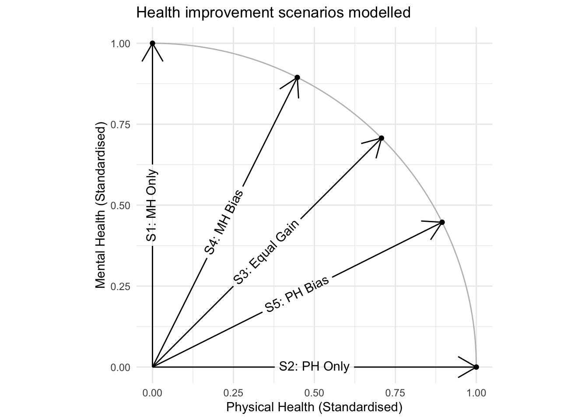
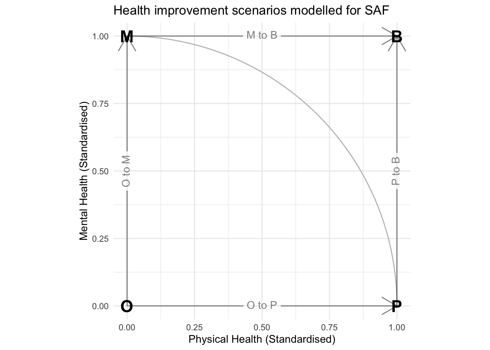

| pidp | wave | age | sex | this_status | next_status |
|---|---|---|---|---|---|
| 476763647 | d | 42 | female | Employed | Employed |
| 1020258415 | a | 17 | female | Inactive student | Inactive student |
| 843280249 | f | 29 | male | Employed | Employed |
| 884384887 | b | 45 | female | Employed | Employed |
| 408289687 | f | 53 | male | Employed | Employed |
| 544497091 | c | 57 | male | Employed | Employed |
| 680593647 | e | 36 | female | Employed | Inactive care |
| 273117931 | g | 51 | male | Employed | Employed |
| 139406809 | c | 36 | female | Unemployed | Employed |
| 137030207 | a | 40 | male | Inactive other | Employed |
Simulating the impact of changes to health on economic status using multinomial logistic regression and the UK Household Longitudinal Study
1 Abstract
Economic status is an important determinant of health, with unemployment and many forms of economic inactivity associated with worse morbidity and higher mortality. Health can also influence economic status, especially movement from employment to long-term sickness and from long-term sickness to employment. This paper uses modelling to estimate how improvements to health alter the composition of economic status at a population level in the UK, and show how model based population attributable fractions (PAFs) and sequential attributable fractions (SAFs) can be calculated using this approach.
Multinominal logistic regression was used to build a foundational model to estimate the economic status of a population in the next time period, based on age, sex and current economic status. This model was extended to include health as a predictor. The model was then applied to wave i of the UKHLS. We compared the baseline predictions with a counterfactual where the health measures were improved, using two approaches: we first modelled health as a discrete variable, in which limiting long term illness was ‘switched off’ in a counterfactual scenario to estimate its effects on transitions between states. And we secondly modelled health as a pair of linked continuous health variables - mental health and physical health - in which in the counterfactual scenarios standardised health scores were ‘improved’ by one standardised unit.
Although this paper is primarily methodological, the discrete health approach estimated that limiting long-term illness may be responsible for around 60% of economic inactivity due to long-term sickness; and that improving health more generally could reduce economic inactivity due to long-term sickness by around 30%. It appears improvements in physical health tend to reduce the size of long-term sickness related economic inactivity slightly more than equivalent improvements in mental health.
Further analysis will build on this methodology to quantify the impact of changes in structural, household and individual level factors on population-level economic status.
2 Introduction
There have been important and in some cases troubling trends in working age economic inactivity in the UK, especially in trends towards rising economic inactivity related to ill health.
This paper describes the development and results of a modelling framework that estimates the contribution of health to population-level economic activity and inactivity, controlling for demography and current economic status. The framework is highly adaptable and could be extended to include wider determinants of economic status in addition to health.
2.1 Economic activity and economic inactivity in the UK
Working-age adults in the UK can be divided by their main economic status into the employed, unemployed and the economically inactive. Employed people include employees and the self-employed who do at least one paid hour of work a week plus those temporarily away from work because they are on holiday or sick. Unemployed people are defined as those out of work and are either actively seeking work and are available to start work within the next two weeks or who are out of work, have found work and are about to start employment within the next two weeks. Economically inactive people are those out of work who are not available for or actively seeking employment. The main reasons for working-age economic inactivity in the UK include being in full-time education, long-term illness or disability, looking after home and family and (early)retired (“Labour Market Overview, UK: October 2020” 2020).
Economic status is an important determinant of public health. Working is associated with better mental and physical health, while people who are long-term sick have the worst morbidity (Wilson, Wilson, and Usher 2015; Brown et al. 2012) Unemployed adults and those looking after home and family have intermediate levels of health. Compared to the employed, working-age adults who become or remain unemployed or economically inactive (especially long-term sick or early retired) have an increased risk of mortality (Roelfs et al. 2011; Åhs and Westerling 2006; Kim et al. 2015). For economically inactive students, the picture is more complex. Their mental health is poorer than those in employment; however, some evidence suggests this difference may be transitory, with the effect wearing off once they leave full-time education (McCloud et al. 2023).
Health is also an important driver of economic status. In the UK, adults of all ages were more likely to be economically inactive if they had self-reported bad/very bad health than if they had self-reported good/very good health(Dey-Chowdhury and Thorne 2022). Economic inactivity due to long-term sickness has also increased since 2019. While an ageing population and increased waiting lists for NHS treatment may have played a role in this, the UK’s worsening health record was also a major contributory factor (Tinson, Major, and Finch 2022; “How Does Economic Inactivity Compare Across Advanced Economies?” 2023).
Since the 1970s in Britain, inactivity has fallen for working-age women and risen for working-age men. Within this, the numbers inactive due to looking after home and family have decreased, while those inactive because of full-time education or long-term sickness has increased (Machin and Wadsworth 2023; Dar 2015). Alongside this, employment rates for mothers increased steadily in the 1980s and 1990s, while employment rates for people with disabilities declined until the early 1980s and did not recover in the next two decades (Berthoud 2007). Between 2000 and 2018, economic inactivity for adults aged 16-64 fell only slightly, driven by increased labour market participation for women aged 50-64 (Herz and Rens, n.d.).
Of particular concern to policy makers is the number of working-age adults whose economic inactivity is due to long-term sickness. 2.8 million adults in the UK were in this position in January-March 2024 (“Labour Market Overview, UK: August 2024,” n.d.). This reflects both long-term and short-term trends. The long-term trend is a reflection of growing numbers of working-age adults on incapacity benefits (IB) since the 1970s. Both sexes were affected. Male levels increased sharply until mid-1990s before levelling off. Female levels continued to increase after mid-1990s but also levelled off in early 2000s (Anyadike-Danes and McVicar 2008). These changes are likely to be due to a combination of factors: local and regional spatial differences in labour market demand and lower employment prospects linked to poor health and low skills (Beatty and Fothergill 2013; Roberts and Taylor 2022; Plotnikova 2020; Machin and Wadsworth 2023). There is some evidence that economic inactivity due to long-term sickness declined in the UK between the early 2000s and early to mid-2010s. Trends in long-term sickness stopped falling around the middle to latter half of the decade and have subsequently increased (Machin and Wadsworth 2023). Quantifying the contribution of these factors to the growth in long-term sickness could help understand what to focus on, to reverse recent increases and prevent further growth.
2.2 Background to modelling strategies and approaches
In this paper, we use multinominal logistic regression to predict the distribution of the working-age population by economic status in the next time period. After creating a foundational model, which includes age, sex and current economic status, we consider two extended model specifications, both of which include at least one health-related variables in addition to the variables in the foundational model.
The first of these extended model specifications uses a binary variable, which is coded as 1 if the respondent reports having a limiting long-term illness, and 0 if they do not. The second extended model specification uses a continuous measure of health, derived from the physical health and mental health components of the Short Form (SF) 12 (SF-12) questionnaire (Ware, Kosinski, and Keller 1996). We focus here on the pre-pandemic period 2010 to 2019, because the drivers of economic inactivity during the pandemic are likely to be different from those in the pre-COVID years.
3 General Methodological Considerations
This section of the paper will approach how we thought about problems, challenges and solutions of building a model that can answer questions on the contributions of specific factors on the levels of economic inactivity and activity in a population. We first describe what the model needs to accomplish; then describe modelling and simulation principles in general; lastly we move towards operationalisation and the specific model structure and content that we use in this manuscript.
3.1 Description of the modelling challenges and how we address them
The modelling strategy starts with the need to operationalise key assumptions about the economic (in)activity status of individuals over time, factors that may influence an individual’s economic (in)activity status, and the longitudinal study design of the UKHLS. We assume:
- An individual can be in one of seven mutually exclusive and exhaustive economic (in)activity states at a given time period \(T\). Therefore we use a multinomial logistic regression.
- A key factor expected to influence the economic (in)activity state of an individual at time \(T+1\) is their economic (in)activity state in the previous time period \(T\).
- A person’s age is expected to influence the probability of an individual being in each and every economic (in)activity state, and these effects are likely to be nonlinear. We explored whether age should be included using a polynomial or spline function within the model.
- A person’s sex is also expected to be influential as to their probability of being in and moving to each economic (in)activity state. We explored whether sex should be included an independent or interactive variable within the model.
- Once the modelling framework is sufficient in capturing those qualities represented by conditions (1-4), it should be readily extensible to capture the additional influence that other factors may have on the predicted probabilities of being in each mutually exclusive economic (in)activity state at time \(T\). Condition (1) indicates that a multivariate model should be used. By this we mean that the response variable Y comprises a vector of response outcomes, rather than a single response outcome. Knowing additionally from this condition that the states an individual can be in are mutually exclusive and exhaustive leads us to a choice of multinomial logistic regression as our main model framework. Multinomial logistic regression is an extension of standard logistic regression from two mutually exclusive states to K mutually exclusive states, where \(K\) is an integer value, which in our case is seven: the number of mutually exclusive and exhaustive economic (in)activity states an individual can be in at a time period \(T\).
Appendix A discusses the rationale for these conditions in more detail.
Within this paper, we refer to:
- The Foundational Model, which includes current economic status, age and sex.
- Extended Models, which add one or more predictor variables to the Foundational Model.
By comparing scenarios in an extended model, where the additional variable or variables of interested are changed between scenarios, but the foundational model variables are kepy constant, we are able to produce estimates of the contribution of these variables of interest to population-level economic status.
3.2 Modelling for simulation
Appendix B contains a background to generalised linear models, how they are used for statistical simulation, and the specific type of model specification and processes and analyses conducted. This includes discussion of how the results from statistical simulation can be presented as PAFs and SAFs.
3.3 Data Source Used: The UK Household Longitudinal Study
Our first step was to build a foundational model to predict the future distribution of economic status in the population based on the current characteristics of that population. We do this using individuals’ observed economic states reported across ten waves of the UK Household Longitudinal Study (UKHLS), 2009-10 to 2018-19. Also known as Understanding Society, the UKHLS is a longitudinal household panel survey that aims to follow all individuals in households selected at random in the first wave, 2009. Even where households move, or individuals in initially selected household form new households, the UKHLS aims to interview them each subsequent year, along with any new household members.
Important strengths of the UKHLS for our purposes are its longitudinal nature and the richness of the data it collects. Because of its longitudinal nature, the UKHLS is ideal for tracking changes in individuals’ economic (in)activity states over time and seeing how a variety of factors at wave \(T\) influence the subsequent state at time \(T+1\). Its collection of data on income, employment and other labour market outcomes, education, family and health is comprehensive compared to other large-scale surveys (Benzeval, Crossley, and Aguirre 2023). Other advantages of UKHLS include its large sample size compared to other longitudinal surveys, its coverage of all age groups (rather than a specific birth cohort), and its potential for linkage with ecological data and individual-level administrative data. A key limitation is attrition (people dropping-out of the survey) and loss of representativeness over time (Platt et al. 2021).
We use all the observations from waves i (2009-10) to waves j (2018-19) for which flows from T to T+1 are available. This means that any one individual can contribute multiple observations to the model, similar to autoregressive time-series models, so the model is based on unique observations, not unique individuals. We excluded waves k (2019-20) to m (2021-22), because changes in economic status are likely to have been affected by the COVID-19 epidemic during these years.
3.4 Categories of economic (in)activity
The UKHLS offers a number of levels of aggregation and disaggregation at which an individual’s economic (in)activity state can be divided. This ranges from two mutually exclusive states, {economically inactive, economically active}, through to a much larger number of economically inactive states. In the case of two mutually exclusive states, economically inactive includes full time students, those inactive for reasons of ill health, and full time carers, even though we may consider these to be qualitatively different categories and experiences. Similarly economically active includes both those who are presently employed, and those who are unemployed but seeking employment: again, qualitatively different categories. In order to be mindful of the hidden heterogeneity involved in the broader categories of economically inactive and economically active, we made use consistently of a seven-level grouping of economic (in)activity types from the UKHLS:
- Economically Active:
- Employed
- Unemployed
- Economically Inactive:
- Long Term Sick
- Full Time Student
- Full Time Carer
- Early Retired
- Other
Using the terminology introduced in appendix B, our multinomial logistic regression model therefore has K=7 (and so J=6). Each of the seven states is treated as categorical, and model does not ‘know’ (in the sense there are no structural constraints) that, say, Long term Sick and Full Time Student are both types of Economic Inactivity, and that Employed and Unemployed are both types of Economic Activity.
3.5 Dual uses of the dataset
It is important to note that the main dataset used in this paper, the UK Household Longitudinal Study (UKHLS), is used in two distinct capacities: firstly to calibrate a model to produce a vector of conditional expected probabilities of individuals ending up in each of the mutually exclusive economic (in)activity states at the next discrete period; and secondly to construct a representative population sample frame used to produce the reference population. Using the algebraic terminology introduced in appendix B, we call the representative population sample frame \(X^{Ref}\), which is then artificially modified through the overwriting of factors of interest, \(Z\), to form the counterfactual population, \(X^{Alt}\). The distinction between these two uses, and ways in which the UKHLS is used in these two capacities, will now be discussed.
The UKHLS is a household panel survey, which aims to follow up all individuals in households selected at random via the Postcode Address File (PAF) annually from the first 12 month period of its operation, 2009, for each subsequent 12 month period. Within the UKHLS, each 12 month period is referred to as a wave, and the first wave referred to as wave a. For our purposes, the data required for calibrating the model are those where individuals have been successfully recontacted between consecutive waves, and the economic (in)activity status at both waves \(T\) and \(T+1\) have been successfully recorded. The observations in our model therefore comprise \(D ≡ \{y,X\}\), where \(y= y_{t+1}\), the economic (in)activity status at wave \(T+1\), and \(X= \{W,y_t,Z\}\), i.e. sociodemographic confounders of interest \(W\), economic (in)activity status at wave \(T\), \(y_t\), and the factor or factors of interest \(Z\). (Implicitly, \(W\) and \(Z\) are also as recorded at wave \(T\), and for an individual factors like age are of course liable to change over time.)
When calibrating the model, the observations used \(D\) therefore comprise paired observations from individuals who have been successfully followed up between consecutive waves, with the model response term being from wave \(T+1\) and other variables from wave \(T\). This means both that the same individual may contribute multiple observations to the calibration dataset if paired consecutive observations of their economic (in)activity status over multiple waves has been successfully recorded. observations from a specific individual from a given wave \(T\) will not be included in the calibration dataset if their corresponding economic (in)activity status at the following wave \(y_{t+1}\) has not been successfully recorded; but also that the same individual may contribute multiple observations to the calibration dataset if paired consecutive observations of their economic (in)activity status over multiple waves has been successfully recorded. These observations comprising paired statuses between consecutive waves \(\{y_{t+1},y_t\}\) are therefore assumed to be conditionally independent given \(W\) and \(Z\). This assumption was checked by comparing the AIC and BIC of alternative model specifications that included additional historical status terms - \(\{y_{t+1},y_t,y_{t-1}\}\),\(\{y_{t+1},y_t,y_{t-1},y_{t-2}\}\), and so on – which were not found to lead to improvements in penalized model fit.1 AIC and BIC was also used to select between a number of candidate model structures for including the effects of sociodemographic confounders, \(W\) (Akaike 1974; Schwarz 1978). This led to the identification of what we describe as our foundational model specification, which is detailed later. Our foundational model specification includes a specific treatment of \(W\) and \(y_t\). Model specifications including one or more factors of interest, \(Z\), are referred to as extended models, which contain all terms in the foundational model specification plus the additional term or terms contained in \(Z\); the foundational model specification can therefore be considered a restricted version of each extended model specification. Again, AIC and BIC, along with researcher judgement, is used to determine which extended model specification to use for simulation.
Regarding the use of the UKHLS data for model prediction, the last complete pre-pandemic wave pairing, i.e. waves \(i-j\), was used. The use of this wave-pairing represents a compromise between a range of completing considerations: on the one hand, sample attrition tends to increase over time, meaning that data from earlier waves are likely to be more completed. But on the other hand, earlier data are likely to be less representative of contemporary UK sociodemographic characteristics than later data. Finally, data covering the pandemic and earlier post pandemic period are likely to have compositions, especially of economic (in)activity states, unrepresentative of non-pandemic periods.
As described above, the procedure using data from waves i-j for model prediction involved identifying all complete observations from this wave for variables \(\{W,y_t,Z\}\) and using them to construct the reference population sample frame \(X^{Ref}\). Using the procedure described above, for the counterfactual sample frame \(X^{Alt}\) the values of \(Z\) were ‘switched off’, i.e. set to 0, in the case of a binary indicator, or standardised and normalized, then moved one standardised unit in the ‘good’ direction for continuous indicators. In the case of the continuous indicator presented in this paper there were a number of different ways of implementing the concept of moving \(Z\) one standardised unit in the good direction, due to the factor of interest – health – being recorded separately for mental health and physical health, and an interaction term between these two health subdomains being identified as important for modelling these factors appropriately.
3.6 Model Specification
3.6.1 Foundational Model Specification
In appendix B, we state that our model specification must produce predictions of the economic (in)activity status for an individual at time \(T+1\), meaning our response is \(y= y_{t+1}\), given a predictor matrix \(X= \{W,y_t,Z\}\), where \(W\) are sociodemographic confounders, \(y_t\) is the economic (in)activity status at wave \(T\), and \(Z\) represents the factor or factors of interest. This general specification still offers many researcher degrees of freedom in terms of how it may be implemented. Our approach was to first select what we call a common foundational model specification, in which \(X= \{W,y_t \}\), then use this foundational model specification as the starting point for one or more extended model specifications in which \(X= \{W,y_t,Z\}\). We considered it vital that \(W\) includes at a minimum adequate controls for sex and age. We also explored the possibility that interactions between components of \(W\) and \(y_t\) may also be required.
Our final foundational model specification for the predictors \(X\) was, using R’s formula interface:
next_status ~ this_status * sex + splines::bs(age, knots=2, degree=3)
Or equivalently:
next_status ~ this_status * sex + splines::bs(age, df = 5)
This final foundatonal model specification was selected after comparing eight possible foundational model specifications that incorporated event history (this_status), sex, and non-linear age effects: four specifications that included an interaction term between event history and sex (i.e. representing the concept that conditional transitions between states are influenced by sex), and four that did not. Within each of these groups of four, the number of degrees of freedom (the df parameter) in the bs() function was changed between 3 and 6. Further details, including results of performing repeated out-of-sample predictive fit estimation on four candidate models, are presented in Appendix D.
Both extended model specifications discussed in this manuscript begin with this foundational model specification, then add on one or more variables to represent the specific factors/drivers of interest \(Z\).
3.6.2 Extended Model Specification 1: Health as a Discrete Variable
Our first extension of the final foundational model specification is an example where \(Z\) is a single binary health-related indicator. For this we used the variable health, which reports individuals’ responses to the following question:
Do you have any long-standing physical or mental impairment, illness or disability? By ‘long-standing’ I mean anything that has troubled you over a period of at least 12 months or that is likely to trouble you over a period of at least 12 months.(“Health Variable,” n.d.)
We coded affirmative responses to this question as ‘1’, and ‘0’ otherwise, and referred to this binary coded version of the variable as lt_condition in our models. This discrete health extended model specification is therefore the foundational model specification plus this additional variable, i.e.
next_status ~ this_status * sex + splines::bs(age, 5) + lt_condition
To check whether the above specification is sufficient extension of the foundational model when incorporating the possible influence of LLTI, we considered an additional specification including an health:sex interaction. However, this interaction term did not lead to an improvement in either AIC or BIC.
3.6.3 Extended Model Specification 2: Modelling health as a continuous outcome using the SF-12
Our second extended model specification involved modelling health as a continuous rather than discrete variable. For this, we used summary responses from the Short Form (SF) 12, which is a 12-item questionnaire for assessing both mental and physical health asked in each wave of the UKHLS. Of the 12 items in the questionnaire, six items relate to physical health (physical functioning, physical role, bodily pain, and general health), and six items relate to mental health (energy, social functioning, emotional role, mental health) (Turner-Bowker and Hogue, 2014) (Ware et al, 1995). The scores from each of these pairs of six items are aggregated to produce separate mental and physical health component scores; the two scores are not then further aggregated to produce a single overall continuous health score.
For our purposes, we first standardised and normalised both the aggregate mental health and physical health component scores, so that both scores have a mean of 0 and standard deviation of 1. This is to allow us to approach using the model to estimate the contribution that health has on economic (in)activity in a similar way to that used in the first extended model specification. Let us refer to the standardised and normalised mental health component score as \(z^M\) and the standardised and normalised physical health component score as \(z^P\).
Because health scores from the SF-12 are not further aggregated into a single overall health score, but remain separate variables, there are a number of alternative ways that they can be implemented to form the extended model specification. This includes:
- Adding \(z^M\) only
- Adding \(z^P\) only
- Adding both \(z^M\) and \(z^P\) as independent terms
- Adding both \(z^M\) and \(z^P\), including an interaction term between \(z^M\) and \(z^P\)
As elsewhere, we compared these candidate extended model specifications using AIC and BIC. The model specification with the lowest (i.e. ‘preferred’) AIC and BIC scores was the fourth specification above, i.e. the model including both terms with an interaction term. All above model specifications had lower AIC and BIC scores than the foundational model specification.
4 Results: Developing the Foundational Model
As mentioned previously, the modelling approach starts with attempting to determine a foundational model specification which adequately controls for event history (\(y_t\)) and demography (i.e. age and sex). A number of specifications are considered. These specifications differ in terms of the following parameters:
- Whether the specification includes an interaction between sex and current status
- the degree of the polynomial for the spline to represent age
When extracting paired observations between consecutive economic statuses between waves, and when selecting on only those observations where age and sex has been recorded, age is between 16 and 64 years of age inclusive, and both economic status at current and next wave has been successfully identified, then a total of 305,324 observations are available from the UKHLS, relating to 58,301 unique individuals. A random selection of ten observations from this dataset is as follows:
In Table 1 pidp refers to the person identifier, which is unique and consistent across waves, wave is a character indicating the wave from which the variables age, sex and this_status have been observed and recorded. For example wave a is the UKHLS’s first wave, d the fourth wave, and f the sixth wave. The variable next_status is the economic status as observed at the wave immediately after the wave indicated in the wave variable: for wave d, this would be wave e, for f, it would be wave g, and so on.
Both this_status and next_status are seven category regroupings of the variable jbstat in the individual level wave-specific UKHLS datasets.
Below are a series of possible foundational model specifications which incorporate age, sex and event history (this_status) in different ways.
fnd_00:next_status ~ this_status + sex + splines::bs(age, 3)fnd_01:next_status ~ this_status + sex + splines::bs(age, 4)fnd_02:next_status ~ this_status + sex + splines::bs(age, 5)fnd_03:next_status ~ this_status + sex + splines::bs(age, 6)fnd_04:next_status ~ this_status * sex + splines::bs(age, 3)fnd_05:next_status ~ this_status * sex + splines::bs(age, 4)fnd_06:next_status ~ this_status * sex + splines::bs(age, 5)fnd_07:next_status ~ this_status * sex + splines::bs(age, 6)
The first four specifications involve no interaction between sex and this_status, whereas the last four specifications inclulde an additional sex:this_status interaction term. The number inside the bs() function determines the degree of flexibility of the age spline component.
The penalised model fits using AIC and BIC for each of the above specifications is as follows:
| model | df | AIC | BIC | aic_rank | bic_rank |
|---|---|---|---|---|---|
| fnd_00 | 66 | 289790.9 | 290492.4 | 8 | 5 |
| fnd_01 | 72 | 289743.8 | 290509.1 | 7 | 6 |
| fnd_02 | 78 | 289722.5 | 290551.6 | 6 | 7 |
| fnd_03 | 84 | 289694.8 | 290587.6 | 5 | 8 |
| fnd_04 | 102 | 289191.0 | 290275.2 | 4 | 1 |
| fnd_05 | 108 | 289143.5 | 290291.5 | 3 | 2 |
| fnd_06 | 114 | 289122.5 | 290334.3 | 2 | 3 |
| fnd_07 | 120 | 289094.7 | 290370.2 | 1 | 4 |
From Table 2 we can see that, having set the number of iterations to 200 rather than the default 100, all models have converged before reaching the iteration limit. The four model specifications with interaction terms (fnd_04 through to fnd_07) outpeform the model specifications without interaction terms, suggesting the interaction term should be included. However, the rank order of these specifications using AIC and BIC are reversed, with AIC suggesting the most complicated model specification fnd_07 should be used, whereas BIC indicating the least complicated of the with-interaction term model specifications fnd_04 should be used.
However only a subset of the above data contain the necessary health variables, and the foundational model specification that best fits this subset may be clearer.
| model | df | AIC | BIC | aic_rank | bic_rank |
|---|---|---|---|---|---|
| fnd_00 | 66 | 289293.3 | 289994.7 | 8 | 5 |
| fnd_01 | 72 | 289246.7 | 290011.9 | 7 | 6 |
| fnd_02 | 78 | 289225.7 | 290054.7 | 6 | 7 |
| fnd_03 | 84 | 289198.2 | 290091.0 | 5 | 8 |
| fnd_04 | 102 | 288695.9 | 289779.9 | 4 | 1 |
| fnd_05 | 108 | 288648.9 | 289796.7 | 3 | 2 |
| fnd_06 | 114 | 288628.2 | 289839.8 | 2 | 3 |
| fnd_07 | 120 | 288600.7 | 289876.0 | 1 | 4 |
Table 3 shows that, with the health-variable subset of the dataset, the same results are apparent: models including interaction terms outperform those without interaction terms, but the rank order of preference differs by whether the AIC or BIC metric is used.
To try to resolve this, we can also look at the subset of data which contains the continuous health variables of interest. These are discussed in detail in Appendix C. They confirm that fnd_06 is marginally preferred to other candidate model specifications, but also that there is only marginal difference in out-of-sample predictive accuracy scores between the model specifications.
5 Results: Developing the extended models
As mentioned there are two types of extended model specification presented here, one in which health is treated as a discrete variable, and another in which health is treated as continuous variables. For both types of model we begin by detailing how the extended model specification was arrived at, before presenting the results of simulations based on the selected extended model specification
5.1 Modelling Health as a Discrete Variable
5.1.1 Model selection
The two following extended model specifications were considered as ways of incorporating the effect of a long-term health condition (where the variable lt_condition is a simple derivative of the health variable in the UKHLS) on labour market activity:
mod_01:next_status ~ this_status * sex + splines::bs(age, 5) + lt_conditionmod_02:next_status ~ this_status * sex + splines::bs(age, 5) + lt_condition * sex
i.e. the second of these two specifications allows for an interaction term between sex and condition, in addition to the interaction term between sex and this_status already included as part of the baseline model.
The penalised model fits of the two extended model specifications, along with the foundational model specification (called mod_00 here), using AIC and BIC are shown below:
| model | df | AIC | BIC | aic_rank | bic_rank |
|---|---|---|---|---|---|
| mod_00 | 126 | 288652.3 | 289991.4 | 3 | 3 |
| mod_01 | 132 | 284982.5 | 286385.4 | 2 | 1 |
| mod_02 | 138 | 284977.4 | 286444.1 | 1 | 2 |
From Table 4 we can see that both versions of the extended model specification mod_01 and mod_02 outperformed the foundational model specification (called mod_00 here), suggesting health adds useful predictive information to the model. The generally more parsimonious BIC metric suggests the model without interaction terms should be used, whereas the less parsimonious AIC metric suggests the model with interaction terms should be used. Rather than engaging in another assessment round we decided to use the simpler mod_01, i.e. the extended model specification without interaction terms, as suggested by the BIC metric.
5.1.2 Model predictions and simulations
5.1.2.1 Predictive accuracy
The discrete health extended model specification has an average predicted model accuracy score of 0.7858, as opposed to 0.7847 for the foundational model, when both are assessed using the data used to fit them, showing a marginal improvement in fit associated with including this variable.
5.1.2.2 Vignette examples: Predicted effects of health
To further demonstrate how the modelling approach generates predicted probabilities for individuals being in each of the seven mutually exclusive and exhaustive economic states at the next wave, given existing state, age, sex, and presence or absence of a long term condition, appendix C shows the predicted results given a series of vignettes, in which combinations of three different ages, two sexes, three economic statuses, and the presence or absence of a long-term condition. The individual level results from a data-based sample frame, modifying only the lt_condition variable for a counterfactual scenario, are what is used to produce population level estimates of the effect of lt_condition, and subsequently PAFs and (where there is more than one exposure variable) SAFs.
5.1.2.3 Population level estimates
5.1.2.3.1 Unweighted sample frame
Table 5 shows the estimated differences in population pool predicted to be in each of the seven mutually exclusive categories using the unweighted sample from the last pre-COVID wave:
| Status | base | counterfactual | Base share | Counter share | Point diff | Prop diff |
|---|---|---|---|---|---|---|
| Employed | 15481.4 | 15764.2 | 0.724 | 0.738 | 0.013 | 0.018 |
| Unemployed | 1040.7 | 1097.3 | 0.049 | 0.051 | 0.003 | 0.054 |
| Inactive student | 1255.8 | 1266.6 | 0.059 | 0.059 | 0.001 | 0.009 |
| Inactive care | 1102.9 | 1197.5 | 0.052 | 0.056 | 0.004 | 0.086 |
| Inactive long term sick | 919.6 | 366.4 | 0.043 | 0.017 | -0.026 | -0.602 |
| Inactive retired | 1437.1 | 1543.8 | 0.067 | 0.072 | 0.005 | 0.074 |
| Inactive other | 137.5 | 139.2 | 0.006 | 0.007 | 0.000 | 0.013 |
The estimated effect from this model of assigning all individuals with LLTIs to not having LLTIs is to change the projected proportion of the population who are employed from 72.4% to 73.8%, a 1.3 percentage point change. This same change is projected to reduce the proportion of the population who are Inactive long-term sick from 4.3% to 1.7%, which is a 2.6 percentage point reduction, or in relative terms around a 60.2% reduction from the baseline population size.
5.1.2.3.2 Weighted sample frame
Table 6 the effect of weighting the wave j population using the weighting variable j_indinui_xw from the UKHLS.
| status | baseline | counterfactual | Base share | Counter share | Point diff | Prop diff |
|---|---|---|---|---|---|---|
| Employed | 15434.9 | 15741.8 | 0.722 | 0.736 | 0.014 | 0.020 |
| Unemployed | 1109.9 | 1179.9 | 0.052 | 0.055 | 0.003 | 0.063 |
| Inactive student | 1356.1 | 1368.5 | 0.063 | 0.064 | 0.001 | 0.009 |
| Inactive care | 931.2 | 1029.3 | 0.044 | 0.048 | 0.005 | 0.105 |
| Inactive long term sick | 1016.9 | 405.5 | 0.048 | 0.019 | -0.029 | -0.601 |
| Inactive retired | 1388.3 | 1509.6 | 0.065 | 0.071 | 0.006 | 0.087 |
| Inactive other | 137.8 | 140.4 | 0.006 | 0.007 | 0.000 | 0.019 |
Using the reweighting the results are slightly different: the share of the population projected to be employed in the baseline scenario is now 72.2% (compared with 72.4%), and in the counterfactual scenario 73.6% (compared with 73.8% unweighted). The proportion of the population projected to be Inactive long-term sick is now 4.8% in the baseline scenario and 1.9% in the counterfactual scenario, i.e. more than a halving.
5.1.2.4 PAF summary
Whether using weighted or unweighted approaches, the population share projected to be Inactive long-term sick is around 60% smaller in the counterfactual scenario, where all individuals’ long-term illness status is ‘cured’, than in the baseline scenario where some proportion of the people have long-term illness flags. This suggests a population attributable fraction (PAF) of around 60%, i.e. 60% of the pool of persons of working age who are inactive long-term sick is ‘explained by’ a limiting long-term condition.
5.2 Modelling Health as Continuous Variables
5.2.1 Model selection
The following model extended model specifications were considered and compared with the foundational model specification:
mod_mh: Mental health onlymod_ph: Physical health onlymod_ph_mh: Physical health and mental health: no interaction termmod_phmh: Physical health and mental health: interaction term
The AICs and BICs of these model specifications are shown in Table 7:
| model | df | AIC | BIC | aic_rank | bic_rank |
|---|---|---|---|---|---|
| mod_00 | 126 | 249265.2 | 250588.8 | 5 | 5 |
| mod_mh | 132 | 247752.0 | 249138.7 | 4 | 4 |
| mod_ph | 132 | 245398.4 | 246785.1 | 3 | 3 |
| mod_ph_mh | 138 | 243527.6 | 244977.3 | 2 | 2 |
| mod_phmh | 144 | 243420.4 | 244933.1 | 1 | 1 |
Here the results are unequivocal: both the AIC and BIC metrics indicate the model including both mental and physical health factors, and an interaction term between them, should be used.
5.2.2 Model predictions and simulations
5.2.2.1 Predictive accuracy
The continuous health extended model specification has an average predicted model accuracy score of 0.7927, as opposed to 0.7902 for the foundational model, when both are assessed using the data used to fit them, showing a marginal improvement in fit associated with including this variable.
5.2.2.2 Counterfactual scenarios
Unlike with the discrete case, there are a number of possible counterfactual scenarios in which 1 standardised unit of improvement in health has been modelled. Such health improvement could occur entirely through the mental health pathway, or entirely through the physical health pathway, or through a combination of both mental and physical health improvements, which may be biased either towards mental health or physical health. Because of this five different counterfactual scenarios are considered, which can be represented visually, as shown in Figure 1 below.

In order to ensure we are looking at the effect of the type of the driver being modified, rather than the amount of change we are making to these drivers, we need to employ a little trigonometry. If we were to modify both MH and PH by one standard unit, the total amount of change in ‘health’ would be the hypotenuse of a triangle in which both MH and PH are ‘legs’, i.e. \(\sqrt{1^2+1^2}\) or \(\sqrt{2}\), which is 1.41 to two decimal places, and so larger than either of the previous exposure reductions being modelled. In order to work out the amount of equal change across both ‘legs’ required for a 1 unit total change across both dimensions, we therefore need to solve \(1=\sqrt{z^2+z^2}\), i.e. \(1=\sqrt{2z^2}\). This means \(1=2z^2\), so \(z^2=1/2\), and therefore \(z=\frac{1}{\sqrt{2}}\). In scenario 3, therefore, both MH and PH are increased by this same amount, which is 0.71 to two decimal places.
Four different exposure model specifications were considered:
mod_mh: Mental Health onlymod_ph: Physical Health onlymod_ph_mh: Mental Health AND Physical Health (as independent effects)mod_phmh: Mental Health AND Physical Health, including an interaction term
5.2.2.3 Population level estimates
5.2.2.3.1 Unweighted sample frame
The following table shows the estimated differences in population pool predicted to be in each of the seven mutually exclusive categories using the unweighted sample from the last pre-COVID wave:
| Status | base_share | counter_mh_only_share | counter_mh_bias_share | counter_equal_share | counter_ph_bias_share | counter_ph_only_share |
|---|---|---|---|---|---|---|
| Employed | 0.7298824 | 0.7401458 | 0.7458463 | 0.7481795 | 0.7491036 | 0.7476440 |
| Unemployed | 0.0478886 | 0.0421595 | 0.0398184 | 0.0391064 | 0.0391670 | 0.0406065 |
| Inactive student | 0.0584233 | 0.0587900 | 0.0603937 | 0.0611442 | 0.0614774 | 0.0612389 |
| Inactive care | 0.0480222 | 0.0485134 | 0.0476570 | 0.0470484 | 0.0465061 | 0.0459745 |
| Inactive long term sick | 0.0409085 | 0.0345194 | 0.0303162 | 0.0287902 | 0.0285110 | 0.0302655 |
| Inactive retired | 0.0685888 | 0.0701365 | 0.0703249 | 0.0700583 | 0.0694528 | 0.0682176 |
| Inactive other | 0.0062862 | 0.0057355 | 0.0056436 | 0.0056730 | 0.0057820 | 0.0060529 |
Even though each of the counterfactual scenarios are the same in terms of the amount of change they represent relative to the baseline, they differ in terms of the relative contribution of mental or physical health improvement pathways towards this overall improvement.
In terms of projected effect on the share of the population Inactive - long-term sick, the scenario counter_ph_bias apepars to have the largest effect, reducing the share of the population in this state from 4.09% in the baseline scenario to 2.85%. As factors explaining this state are of particular interest we will now focus on this specific counterfactual scenario when comparing with the baseline. The absolute and relative differences between the baseline and this counterfactual scenario are as shown in Table 9:
| Status | base_share | counter_ph_bias_share | point_difference | prop_difference |
|---|---|---|---|---|
| Employed | 0.7298824 | 0.7491036 | 0.0192212 | 0.0263347 |
| Unemployed | 0.0478886 | 0.0391670 | -0.0087216 | -0.1821224 |
| Inactive student | 0.0584233 | 0.0614774 | 0.0030541 | 0.0522755 |
| Inactive care | 0.0480222 | 0.0465061 | -0.0015161 | -0.0315705 |
| Inactive long term sick | 0.0409085 | 0.0285110 | -0.0123975 | -0.3030537 |
| Inactive retired | 0.0685888 | 0.0694528 | 0.0008639 | 0.0125958 |
| Inactive other | 0.0062862 | 0.0057820 | -0.0005041 | -0.0801973 |
From Table 9 we can see that health, as operationalised in this way - as a one standardised unit improvement along both mental and physical health, but biased towards physical health improvement, would lead to a decrease in the share of the population who are Inactive long-term sick from around 4.09% to 2.85%, or a difference of around 30%. This could be interpreted as an estimated PAF of the Inactive long-term sick population attributable to poor health based on this continuous health variable approach, although it is not directly comparable with the approach taken in the discrete health scenario previously.
5.2.2.3.2 Weighted sample frame
Table 10 shows the effect of weighting the wave j population using the weighting variable j_indinui_xw from the UKHLS, with a focus on the scenario that leads to the greatest apparent effect on Inactive long-term sick, namely the ph_bias scenario.
| status | baseline | counterfactual | base_share | counter_share | point_difference | prop_difference |
|---|---|---|---|---|---|---|
| Employed | 14740.1055 | 15135.9847 | 0.7263283 | 0.7458355 | 0.0195072 | 0.0268573 |
| Unemployed | 1038.6712 | 854.8404 | 0.0511812 | 0.0421228 | -0.0090584 | -0.1769866 |
| Inactive student | 1290.2883 | 1359.3788 | 0.0635798 | 0.0669843 | 0.0034045 | 0.0535465 |
| Inactive care | 846.4108 | 821.2700 | 0.0417074 | 0.0404686 | -0.0012388 | -0.0297029 |
| Inactive long term sick | 913.0123 | 644.4313 | 0.0449893 | 0.0317548 | -0.0132345 | -0.2941702 |
| Inactive retired | 1336.4968 | 1359.0392 | 0.0658567 | 0.0669675 | 0.0011108 | 0.0168668 |
| Inactive other | 129.0151 | 119.0557 | 0.0063573 | 0.0058665 | -0.0004908 | -0.0771960 |
We can see from Table 10 that, using the reweighting approach, the proportion projected to be Inactive long-term sick is 4.50% in the baseline scenario, compared to 3.18% in the counterfactual scenario. This is a relative decline of 29.4%, which is only marginally different from the 30.4% estimate produced when no weighting was used.
5.2.2.4 Sequential attributable fraction estimation
The same model can be used to estimate sequential attributable fractions (SAFs) associated with a given marginal change in health status given that another change in health status has already occurred. We can do this by modelling the four following scenarios:
- O Baseline scenario: No change to mental or physical health scores
- P PH only: Physical health improved by one standardised unit; mental health unchanged
- M MH only: Mental health improved by one standardised unit; physical health unchanged
- B Both: Both mental health and physical health each improved by one standardised unit.
Note that scenarios O, P, and M have already been modelled; only scenario B remains to be modelled. Whereas previously each counterfactual scenario modelled involved a 1 standardised unit change from health states in the baseline scenario, but with different degrees of bias towards either physical or mental health change, in the B scenario the total change in health is greater, being 1 unit in the MH direction and 1 unit in the PH direction. If both MH and PH are considered orthogonal dimensions of health in general, and after standardising can be considered to share a common scale, then the total amount of health improvement represented in scenario B is therefore \(\sqrt{1^2 + 1^2}\), or around 1.41 standardised units of health improvements.
The aim of the SAF approach is to estimated the additional effect that a MH improvement has on the outcome of interest (Inactive long-term sick) if a PH improvement had already occurred; or of a PH improvement if a MH improvement had already occurred. It does this by using differences in outcomes by scenario to understand the following two pathways of health improvement:
- \(O \rightarrow P \rightarrow B\)
- \(O \rightarrow M \rightarrow B\)
From the perspective of the first pathway, scenario B represents the addition of MH, whereas from the perspective of the second pathway, scenario B represents the addition of PH. These scenarios are shown graphically in Figure 2:

| state | O (Original) | M (MH Only) | P (PH Only) | B (Both) |
|---|---|---|---|---|
| Employed | 0.7298824 | 0.7401458 | 0.7476440 | 0.7542151 |
| Unemployed | 0.0478886 | 0.0421595 | 0.0406065 | 0.0360063 |
| Inactive student | 0.0584233 | 0.0587900 | 0.0612389 | 0.0624433 |
| Inactive care | 0.0480222 | 0.0485134 | 0.0459745 | 0.0465777 |
| Inactive long term sick | 0.0409085 | 0.0345194 | 0.0302655 | 0.0243904 |
| Inactive retired | 0.0685888 | 0.0701365 | 0.0682176 | 0.0709667 |
| Inactive other | 0.0062862 | 0.0057355 | 0.0060529 | 0.0054004 |
From ?@tbl-hlth-continuous-pool-diffs-saf we can see that, in the baseline scenario, 72.99% of the population are projected to be employed. When mental health alone is improved (scenario M) this increases to 74.01%. When physical health alone is improved (scenario P) this increases to 74.76%. When both physical and mental health are improved (scenario B) this increases to 75.42%.
So, what is the effect of mental health on the proportion employed? This question could either be answered from the perspective of the \(O \rightarrow M \rightarrow B\) pathway, or from the perspective of the \(O \rightarrow P \rightarrow B\) pathway. From the perspective of the first pathway, the effect of improving mental health is projected to increase the proportion employed by 1.03% points (\(O \rightarrow M\)). From the perspective of the second pathway, the effect of improving mental health is projected to increase it by 0.66% points (\(P \rightarrow B\)).
The difference between PAFs and SAFs, and so the importance of modelling marginal effects along sequences, is even easier to understand if looking at projected changes in the proportion Inactive long-term sick in each of the four scenarios. The size of this subpopulation is reduced by 0.64% points if going along the \(O \rightarrow M\) pathway, equivalent to a 15.62% reduction in the baseline subpopulation size. And the size of the subpopulation is reduced by 1.06% points if going along the \(O \rightarrow P\) pathway, equivalent to a 26.02% reduction in the baseline subpopulation size.
From a PAF-like perspective, we might be inclined to suggest therefore that 15.62% of Inactive long-term sick can be attributed to poor mental health, and 26.02% can be attributed to poor physical health. However, this it would be incorrect to assume that the amount attributable to both poor physical health and poor mental health is the sum of these two proportions, or 41.63%. Instead, the difference in subpopulation proportions when going along the \(O \rightarrow B\) pathway is 1.65% points, which is a 40.38% proportionate reduction from the baseline scenario subpopulation size. This difference, from 41.63% to 40.38%, though somewhat small in this example, illustrates why the effect of multiple factors in combination will tend to be smaller than the sum of the individual effects of specific factors, and hence how SAFs differ from PAFs.
6 Discussion
6.1 Summary of Key Findings
This paper has shown how a modelling framework, utilising multinomial logistic regression and using data from the UKHLS, can simulate the distributions of persons of working age in different economic activity states under different scenarios. This approach allows for fine-grained controls for the effects of demography and event history, enabling the estimation of the ceteris paribus effects of specific exposure factors on these distributions. From this, the framework can produce changes in population pool sizes, such as relative changes in the proportion of the population who are economically inactive, which are interpretable as PAFs (Population Attributable Fractions) and SAFs (Sequential Attributable Fractions).
6.2 Interpretation of Findings
The examples of exposures demonstrated in this paper relate to health, with one example of modeling health as a discrete variable and another as a continuous variable. These two approaches are not directly comparable; the discrete health variable models removing ‘bad health’ from afflicted individuals, while the continuous health examples involve improving everyone’s health by an equal amount. This discrepancy explains why the two approaches produce different PAF-like estimates for the contribution of ‘health’ to economic inactivity due to long-term sickness: approximately 60% using the discrete example and around 30% for the continuous examples. However, the primary focus of this paper is methodological rather than providing definitive estimates of specific exposures’ contributions to various economic activity state population sizes.
6.3 Comparison with Previous Research
[The provided content does not contain a direct comparison with previous research. A comparison of findings with prior studies, discussing consistency or discrepancies, should be included here.]
6.4 Implications
The framework presented allows for various potential applications. It can be expanded by incorporating additional individual and household-level factors such as qualifications, housing tenure, and household composition. Moreover, by using special license access to more detailed UKHLS data, researchers can include smaller area geography identifiers and local area-level variables, further expanding the framework’s utility for exploring and estimating factors affecting economic activity status. This broad applicability suggests significant potential for future research, particularly in areas like health interventions, where the framework could simulate the effects of different types and scales of interventions over varying time periods.
6.5 Limitations
The data used for the model are from pre-pandemic years, and it is possible that the relationship between health and economic (in)activity has changed in the UK due to the pandemic and subsequent factors. For example, historically, most illness-related economic inactivity was due to physical health issues. Still, there has been substantial growth in mental health-related inactivity, especially among younger working-age adults. Additionally, the UKHLS’s complex research design, while allowing for longitudinal tracking, may lead to decreasing representativeness over time, necessitating the use of cross-sectional sample weights. While these weights were used in the model, the potential impact of attrition on representativeness, particularly concerning specific UK regions, remains a limitation.
6.6 Future Research Directions
Further research could investigate the degree of dependence PAF-like estimates of exposures have on the choice of foundational model specifications. This could produce estimates of structural model dependence, contributing to understanding the reliability of such estimates. Additionally, there is potential for expanding the model to include absorbing states like death or retirement, especially for multi-period simulations. Investigating the implications of these absorbing states, as well as the trade-offs involved in adding them to the model, could be a valuable area of future study.
6.7 Conclusion
This paper has rigorously described the development and operationalization of a modeling framework that simulates the effects of various exposures on economic activity states. It has highlighted the methodological contributions of the framework and its potential applications for understanding the determinants of economic activity and inactivity. The use of R and the availability of the code as open-source resources enhance the framework’s accessibility, facilitating its adoption and refinement by other researchers.
[The content here is missing a direct summary and final reflection that would typically be part of a conclusion, emphasizing the broader contribution of the study to the field.]
7 References
Åhs, Annika M. H., and Ragnar Westerling. 2006. “Mortality in Relation to Employment Status During Different Levels of Unemployment.” Scandinavian Journal of Public Health 34 (2): 159–67. https://doi.org/10.1080/14034940510032374.
Akaike, H. 1974. “A New Look at the Statistical Model Identification.” IEEE Transactions on Automatic Control 19 (6): 716–23. https://doi.org/10.1109/TAC.1974.1100705.
Anyadike-Danes, Michael, and Duncan McVicar. 2008. “Has the Boom in Incapacity Benefit Claimant Numbers Passed Its Peak?” Fiscal Studies 29 (4): 415434.
Beatty, Christina, and Steve Fothergill. 2013. “Disability Benefits in the UK: An Issue of Health or Jobs?” In, edited by Colin Lindsay and Donald Houston, 15–32. London: Palgrave Macmillan UK. http://link.springer.com/10.1057/9781137314277_2.
Benzeval, Michaela, Thomas F. Crossley, and Edith Aguirre. 2023. “A Symposium on Understanding Society, the UK Household Longitudinal Study: Introduction.” Fiscal Studies 44 (4): 317–40. https://doi.org/10.1111/1475-5890.12355.
Berthoud, Richard. 2007. “Work-Rich and Work-Poor: Three Decades of Change.” https://www.jrf.org.uk/work/work-rich-and-work-poor-three-decades-of-change.
Brown, Judith, Evangelia Demou, Madeleine Ann Tristram, Harper Gilmour, Kaveh A Sanati, and Ewan B Macdonald. 2012. “Employment Status and Health: Understanding the Health of the Economically Inactive Population in Scotland.” BMC Public Health 12 (1): 327. https://doi.org/10.1186/1471-2458-12-327.
Dar, Aliyah. 2015. “Why Are People Economically Inactive?” https://commonslibrary.parliament.uk/why-are-people-economically-inactive/.
Dey-Chowdhury, Sunit, and Sapphira Thorne. 2022. “Worker Movements and Economic Inactivity in the UK: 2018 to 2022.” https://www.ons.gov.uk/employmentandlabourmarket/peoplenotinwork/unemployment/articles/workermovementsandinactivityintheuk/2018to2022.
“Health Variable.” n.d. https://www.understandingsociety.ac.uk/documentation/mainstage/variables/health/.
Herz, Benedict, and Thijs van Rens. n.d. “The Labor Market in the UK, 2000-2019.” https://wol.iza.org/uploads/articles/524/pdfs/the-labor-market-in-the-uk.pdf.
“How Does Economic Inactivity Compare Across Advanced Economies?” 2023. https://obr.uk/box/how-does-economic-inactivity-compare-across-advanced-economies/.
Hyndman, Robert, and George Athanasopoulos. 2021. Forecasting: Principles and Practice. Third Edition. https://otexts.com/fpp3/.
Kim, Ji Man, Nak-Hoon Son, Eun-Cheol Park, Chung Mo Nam, Tae Hyun Kim, and Woo-Hyun Cho. 2015. “The Relationship Between Changes in Employment Status and Mortality Risk Based on the Korea Labor and Income Panel Study (2003-2008).” Asia Pacific Journal of Public Health 27 (2): NP993–1001. https://doi.org/10.1177/1010539513486923.
King, Gary, Michael Tomz, and Jason Wittenberg. 2000. “Making the Most of Statistical Analyses: Improving Interpretation and Presentation.” American Journal of Political Science 44 (2): 347. https://doi.org/10.2307/2669316.
“Labour Market Overview, UK: August 2024.” n.d. https://www.ons.gov.uk/employmentandlabourmarket/peopleinwork/employmentandemployeetypes/bulletins/uklabourmarket/august2024.
“Labour Market Overview, UK: October 2020.” 2020. ONS.
Machin, Steven, and Jonathan Wadsworth. 2023. “The Trouble with Inactivity.” https://cep.lse.ac.uk/_NEW/publications/abstract.asp?index=10314#:~:text=Inactivity%20is%20strongly%20concentrated%20on,themselves%20as%20the%20economy%20recovers.
McCloud, Tayla, Strahil Kamenov, Claire Callender, Glyn Lewis, and Gemma Lewis. 2023. “The Association Between Higher Education Attendance and Common Mental Health Problems Among Young People in England: Evidence from Two Population-Based Cohorts.” The Lancet Public Health 8 (10): e811–19. https://doi.org/10.1016/S2468-2667(23)00188-3.
“Multinomial Logistic Regression Model Specification.” 2017, October. https://zeligproject.org/docs/articles/zeligchoice_mlogit#model.
Platt, Lucinda, Gundi Knies, Renee Luthra, Alita Nandi, and Michaela Benzeval. 2021. “Understanding Society at 10 Years.” European Sociological Review 36 (6): 976–88. https://doi.org/10.1093/esr/jcaa031.
Plotnikova, Maria. 2020. “Explaining Spatial Patterns of Incapacity Benefit Claimant Rolls.” Romanian Journal of Regional Science 14 (2): 35–48. https://ideas.repec.org/a/rrs/journl/v14y2020i2p35-48.html.
Roberts, Jennifer, and Karl Taylor. 2022. “New Evidence on Disability Benefit Claims in Britain: The Role of Health and the Local Labour Market.” Economica 89 (353): 131–60. https://doi.org/10.1111/ecca.12382.
Roelfs, David J., Eran Shor, Karina W. Davidson, and Joseph E. Schwartz. 2011. “Losing Life and Livelihood: A Systematic Review and Meta-Analysis of Unemployment and All-Cause Mortality.” Social Science & Medicine 72 (6): 840–54. https://doi.org/10.1016/j.socscimed.2011.01.005.
Schwarz, Gideon. 1978. “Estimating the Dimension of a Model.” The Annals of Statistics 6 (2). https://doi.org/10.1214/aos/1176344136.
Tinson, Adam, Alice Major, and David Finch. 2022. “Is Poor Health Driving a Rise in Economic Inactivity?” https://www.health.org.uk/news-and-comment/charts-and-infographics/is-poor-health-driving-a-rise-in-economic-inactivity?gad_source=1&gclid=Cj0KCQjwh7K1BhCZARIsAKOrVqHZkWmCrptsKC8mSixh0US77N0oR3BF6ddtCmPxFAWew3P6PkOhsMYaAg3-EALw_wcB.
Ware, J., M. Kosinski, and S. D. Keller. 1996. “A 12-Item Short-Form Health Survey: construction of scales and preliminary tests of reliability and validity.” Medical Care 34 (3): 220–33. https://doi.org/10.1097/00005650-199603000-00003.
Wilson, Rhonda L., G. Glenn Wilson, and Kim Usher. 2015. “Rural Mental Health Ecology: A Framework for Engaging with Mental Health Social Capital in Rural Communities.” EcoHealth 12 (3): 412–20. https://doi.org/10.1007/s10393-015-1037-0.
8 Appendices
8.1 Appendix A: Further discussion of conditions the model needs to satisfy
Condition (2) suggests that we should include economic (in)activity status at time \(T\) as a predictor in our model, where the model response is economic (in)activity status at time \(T+1\). This inclusion of current state (at time \(T\)) as a predictor of next state (time \(T+1\)) means our model is Markovian, in that the influence of recent history is considered an important predictor of current status, but the longer-term history (such as from two or more time periods ago) is only considered to have influenced state at time \(T+1\) through its influence on state T. This modelling approach can also be considered a discrete-state analogue of an autoregressive \(AR(1)\) model in time series data, though Markovian is a more common way of conceptualising this type of model structure when working with mutually exclusive and discrete states and state transitions between time periods.
Condition (3), when combined with condition (1), suggests that a somewhat generic, generalisable and flexible functional form for capturing the types of influence that age can have on the probabilities of being in each of the seven mutually exclusive states. Call this functional form s(age). Potential candidates for this flexible functional form s(.) include polynomial functions, which are parametric, and spline functions, which are semi-parametric. This functional form should be sufficiently flexible as to be appropriate for all seven age-state schedules, but not so flexible that the number of parameters required to fit it are too large, or the risk of model over-fitting too great.
Condition (4) suggests that sex should be considered as a predictor variable in the model. It could either be included as an independent, non-interacting predictor, or also as a factor which interacts with other factors also included in the model. When considering interaction effects, a standard strategy for determining whether an interaction term is required should be adopted to make this determination.
Condition (5) suggests that, in addition to including the factors implied by conditions 2-4 in the model, it should be possible to decide to add additional variables to this basic specification, which allows for the effect of these additional variables on economic (in)activity states to be estimated, assuming conditions 2-4 are adequately controlled for. Within this paper, we refer to the model that includes current status (condition 2), age (condition 3) and sex (condition 4) as our foundational model, and models which add one or more additional variables of interest to the predictor side of the model as our extended models. It is by comparing scenarios in an extended model, where the variable or variables of interest are changed to one of two conditions, but the foundational model variables are kept constant, that we will be able to produce estimates of the contribution of these variables of interest to economic (in)activity states overall.
8.2 Appendix B: Further discussion of generalised linear modelling and model simulation considerations
A statistical model can be thought of, fundamentally, as a simplified and stylized representation of a data generation process. This involves i) defining a model, which contains various parameters to be determined; and ii) using a dataset to calibrate the model parameters. A model is a way of specifying a relationship between predictor variables, usually referred to as \(X\), and response variables, usually referred to as \(y\). The model structure determines how many model parameters are to be estimated, and the process of producing model parameter estimates usually involves attempting to minimize some kind of loss function which relates the conditional predictions from a model \(Y|X\) to the observed outcome values \(y\).
8.2.1 Overview of what models contain
Almost all statistical models can be considered specific instances of a generalised linear model (GLM) specification as described below:
\[ Y_i∼f(θ_i,\alpha), θ_i=g(X_i,\beta) \]
(See eqn 1 of King, Tomz, and Wittenberg (2000))
Where \(Y_i\) represents a model-predicted value for the ith observation of a dataset, \(f(.,.)\) a stochastic function, \(g(.,.)\) a systematic or linking function, \(X_i\) a row of predictor variables corresponding to the ith observation of the data, \(θ_i\) the result of applying the linking function to \(X_i\) , and \(\alpha\) and \(\beta\) parameters, for \(f(.,.)\) and \(g(.,.)\) respectively, to be determined either analytically or numerically.
The estimation of parameters \(\alpha\) and \(\beta\) usually involves optimising some loss function \(L(Y, y)\) where \(Y\) represents model predictions and \(y\) the corresponding observed outcomes from the data. This loss function is usually based on maximum likelihood identification.
Note that the GLM specification above is generic enough that it covers cases where \(\theta_i\), \(Y_i\) and \(y_i\) are vectors of length \(k\), rather than scalars (single values), and so \(\theta\), \(Y\) and \(y\) are matrices of dimensions \(N\) by \(k\) (where \(N\) represents the number of observations, typically rows, in the dataset). Models where these quantities are vectors can be called multivariate regression models or vector GLMs.
Within this paper, we use multinomial logistic regression, which can be thought of as a vectorised extension of standard logistic regression. For standard logistic regression we code an outcome as either 0 or 1 for each observation. This is appropriate where there are two and only two mutually exclusive states that an outcome can take. The standard logistic regression looks as follows:
\[ Y_i ∼ Bernoulli(\pi_i ) , π_i = \frac{1}{(1 + e^{-X_i \beta } )} \]
(From eqn 3 of King, Tomz, and Wittenberg (2000))
Here \(\pi_i\) assigns a probability of the ith outcome taking a value of 1, meaning the probability of the ith outcome taking a value of 0 is \(1 - \pi_i\). For multinomial logistic regression this generalises to:
\[ Y_i ∼ Multinomial(y_i, \pi_{ij} ) , \pi_{ij} = \frac{exp(x_i \beta_j )}{\sum_{k=1}^{J}exp(x_i \beta_k ) } \]
(See “Multinomial Logistic Regression Model Specification” (2017))
Where in the above there are \(J\) mutually exclusive outcomes that Y_i can take, where \(J = K-1\), and \(K\) is the total number of mutually exclusive and exhaustive states that can be possible outcomes for observation \(i\). The difference between \(J\) and \(K\) is due to the need for a reference category, analogous to the 0 outcome in standard logistic regression. Just as the predicted probability of observation i taking an outcome 0 in standard logistic regression is \(1- \pi_i\) , so the predicted probability of observation i taking the reference category outcome in multinomial logistic regression is \(1- \sum_{k=1}^{J} \pi_{ik}\).
8.2.2 Selecting between model specifications
Different model specifications, involving different predictors \(X\), are compared using Akaike’s Information Criterion (AIC) and the Bayesian Information Criterion (BIC), even where models are not nested (Akaike 1974; Schwarz 1978). In either case, lower scores are generally considered to indicate a better trade-off between model complexity and model fit, and BIC tends to penalise model complexity more severely than AIC, leading to more parsimonious models being selected. Where AIC and BIC ‘prefer’ different model specifications, researcher judgement was used to determine which model specification to adopt, for both the ‘foundational’ and ‘extended’ model specifications.
8.2.3 Simulation to quantify the effects of specific factors
With a model specification selected as described above, after being calibrated on the available data, the model can then be used to estimate the influence of one or more specific factors on both individual level conditional probabilities to transition to different mutually exclusive states, and the composition of a population beginning in heterogeneous states ending up each of the mutually exclusive states. The latter process, population level modelling, depends on the former process: the modelling of conditional transition for an individual with a known state at time T to each of the mutually exclusive states at time T+1. This section will therefore describe how the modelling can be used to simulate the effects of a given factor of interest on individual-level transitions, before then describing how the approach can be used to estimate the effects of a given factor for a population. To start with, let us say that model \(M(.)\) has been calibrated on observed data \(D ≡ \{y,X\}\), where \(y\) is the observed response and \(X\) is the observed predictor matrix. Given any valid set of predictor variables for an individual \(X_i\) the model will generate expected probabilities \(E(Y_i )= P\) where \(P ≡ {p_1,p_2,…,p_J }\), \(p_0= 1- \sum_{j=1}^{J}p_j\) and \(\sum_{j=1}^J p_j <1\). (i.e. the model will generate mutually exclusive and exhaustive expected probabilities for each of the \(K\) mutually exclusive states where, as before, \(K=J+1\).)
Given the above, the model will generate mutually exclusive and exhaustive predicted probabilities of being in each state at time \(T+1\), \(P^*\), given a hypothetical predictor set \(X_i^*\). We can further imagine splitting this hypothetical predictor set into components \(X_i^*= \{W_i,Y_i (T),Z\}\), where \(W_i\) represents a range of modelled factors (such as age and sex) to control for, \(Y_i (T)\) represents the economic (in)activity state at time \(T\), and \(Z\) represents a factor (or set of factors) of interest.
We can now define two predictor sets: \(X_i^{Trt}= \{W_i,Y_i (T),Z= Z^{Trt} \}\), and \(X_i^{Ctr}= \{W_i,Y_i (T),Z= Z^{Ctr} \}\). Note that these differ only in terms of the contents of the factor or factors of interest \(Z\), with all other variables identical. To simplify, let us assume that \(Z=1\) for \(X_i^{Trt}\), and \(Z=0\) for \(X_i^{Ctr}\), i.e. that \(Z\) is a binary indicator which marks the individual as either exposed or not exposed to the specific factor of interest. We can then define a model-derived treatment effect relating to this factor as \({TE}_i=E(Y_i^{Trt})-E(Y_i^{Ctr})\) where \(Y_i^*\) is the model prediction given \(X_i^*\) as input. Along with the conditions stated above - that \(p_0 = 1 - \sum_{j=1}^J p_j\) and that \(J\) is one less \(K\), we have two vectors of predicted probabilities of length K: \(\{p_0^{Trt},p_1^{Trt},p_2^{Trt} ,…,p_J^{Trt} \}\) and \(\{p_0^{Ctr},p_1^{Ctr},p_2^{Ctr} ,…,p_J^{Ctr} \}\). Our simulated treatment effect for individual \(i\) will therefore be a vector of length \(K\): \(\{p_0^{Trt}- p_0^{Ctr},p_1^{Trt}- p_1^{Ctr},p_2^{Trt}- p_2^{Ctr} ,…,p_J^{Trt}- p_J^{Ctr} \}\), where the value of each element will be above 0 if the estimated probability of being in the state indicated by the position element is greater in the treatment condition (where \(Z=1\)) than in the control condition (where \(Z=0\)); and below 0 if the probability is estimated to be higher in the control than the treatment condition.
8.2.4 Moving from individual level to population level estimates
We can extend the intuition of the above to estimating the effect of a given factor of interest \(Z\) for a population rather than an individual as follows. If we define \(X^{Ref}\) as a matrix of dimensions \(m\) by \(p\), where \(m\) is the number of rows (number of hypothetical individuals) and \(p\) the number of columns (number of predictors) then we can say that the contents for each row of \(X^{Ref}\), \(X_i^{Ref}\), are \(\{W_i,Y_i (T),Z=Z_i \}\). Again, in the simple case of a binary indicator for \(Z\), \(Z_i\) could take on a value of either 0 or 1. We can now define a counterfactual matrix, \(X^{Alt}\), whose dimensions and values are identical to that of \(X^{Ref}\), except that all values of \(Z\) are now set to 0, i.e. \(X_i^{Alt}= \{W_i,Y_i (T),Z=0\}\) for all i. If we now slightly redefine \(P\) as an m-by-K (rather than m-by-J) dimension matrix of conditional expected probabilities including the probabilities of \(p_0\) (i.e. the reference category state) we can now define the matrix of expected probabilities given \(X^{Ref}\) as \(P^{Ref}\) and given \(X^{Alt}\) as \(P^{Alt}\). With both \(P^{Ref}\) and \(P^{Alt}\) we can now produce modelled estimates of the number of individuals projected to be in each of the \(K\) mutually exclusive states through column-wise summation of each \(P\) matrix. This will produce two vectors, \(S^{Ref}\) and \(S^{Alt}\), both of length \(K\), whose elements are \(\{s_0^{Ref},s_1^{Ref},…,s_J^{Ref} \}\) and \(\{s_0^{Alt},s_1^{Alt},…,s_J^{Alt} \}\) respectively. For both \(S^{Ref}\) and \(S^{Alt}\), the sum of all elements will be \(m\), the number of rows in \(X\), because for any row of \(X\), \(X_i\), the sum of all row-wise probabilities must equal 1.
8.2.5 Using the approach to estimate PAFs and SAFs
What the above means is that the contents of \(S^{Ref}\) and \(S^{Alt}\) give the predicted pool sizes for a population of individuals in each mutually exclusive state under conditions that differ only in terms of the presence, absence or value of the particular factor of interest \(Z\). This means that for a particular state \(j\) then \(s_j^{Alt} - s_j^{Ref}\) will give the additional number of persons in state j that can be attributed to Z, and \(\frac{s_j^{Alt}- s_j^{Ref}}{s_j^{Ref}}\) the relative difference in state \(j\) pool size that can be attributed to \(Z\). This latter quantity can be of particular interest as, when \(Z\) comprises a single factor, then it can be interpreted as a population-attributable fraction (PAF), i.e. the proportion of the state pool size that can be ‘explained by’ the factor of interest. Where \(Z\) comprises more than one factor, then the selective ‘switching on’ and ‘switching off’ of factors within the model can be used to estimate the related sequential attributable fractions (SAFs) of the marginal contributions of any specific faction given the presence or absence of other factors of interest.
8.3 Including continuous variables in the model
The descriptions above have considered the case where \(Z\) takes on a binary value, 0 or 1. Where \(Z\) takes on a continuous value, the values of \(Z\) are first normalized and standardized to have a mean of 0 and standard deviation of 1. In the control/reference population the observed values (after standardisation and normalisation) are used; for the alternative population a value of 1 is either added or subtracted to the observed values, depending on whether the factor of interest is something to which population exposure should ideally be maximized (so added) or minimized (so subtracted). In either case, this is equivalent to an alternative/counterfactual scenario in which the exposure to the factor of interest has been shifted by one standardised unit in the ‘good’ direction.
8.4 Appendix C: Illustrative individual level vignettes
8.4.0.1 Predictive accuracy
The discrete health extended model specification has an average predicted model accuracy score of 0.7858, as opposed to 0.7847 for the foundational model, when both are assessed using the data used to fit them, showing a marginal improvement in fit associated with including this variable.
8.4.0.2 Vignette examples: Predicted effects of health
To illustrate the substantive predicted effects of health the following vignettes are presented both where an LLTI is present (lt_condition = TRUE) or absent (lt_condition=FALSE)
- Male, aged 25 or 50. Either Employed, Unemployed, or Economically Inactive, Long-term sick
- Female, aged 25 or 50. Either Employed, Unemployed, or Economically Inactive, Long-term sick
These vignettes are presented in Table 12
| sex | age | this_status | lt_condition | Employed | Inactive care | Inactive long term sick | Inactive other | Inactive retired | Inactive student | Unemployed |
|---|---|---|---|---|---|---|---|---|---|---|
| male | 25 | Employed | FALSE | 0.953 | 0.001 | 0.001 | 0.002 | 0.000 | 0.017 | 0.026 |
| male | 25 | Employed | TRUE | 0.930 | 0.002 | 0.008 | 0.003 | 0.000 | 0.018 | 0.040 |
| male | 25 | Unemployed | FALSE | 0.370 | 0.027 | 0.019 | 0.013 | 0.000 | 0.046 | 0.524 |
| male | 25 | Unemployed | TRUE | 0.251 | 0.022 | 0.119 | 0.013 | 0.000 | 0.035 | 0.559 |
| male | 25 | Inactive long term sick | FALSE | 0.173 | 0.040 | 0.279 | 0.017 | 0.001 | 0.058 | 0.432 |
| male | 25 | Inactive long term sick | TRUE | 0.049 | 0.014 | 0.719 | 0.007 | 0.001 | 0.018 | 0.192 |
| male | 50 | Employed | FALSE | 0.969 | 0.001 | 0.001 | 0.002 | 0.005 | 0.002 | 0.019 |
| male | 50 | Employed | TRUE | 0.945 | 0.001 | 0.013 | 0.003 | 0.006 | 0.002 | 0.029 |
| male | 50 | Unemployed | FALSE | 0.440 | 0.026 | 0.037 | 0.020 | 0.019 | 0.005 | 0.453 |
| male | 50 | Unemployed | TRUE | 0.278 | 0.020 | 0.212 | 0.019 | 0.016 | 0.004 | 0.451 |
| male | 50 | Inactive long term sick | FALSE | 0.163 | 0.030 | 0.422 | 0.021 | 0.063 | 0.005 | 0.296 |
| male | 50 | Inactive long term sick | TRUE | 0.035 | 0.008 | 0.831 | 0.007 | 0.018 | 0.001 | 0.100 |
| female | 25 | Employed | FALSE | 0.934 | 0.017 | 0.001 | 0.002 | 0.000 | 0.025 | 0.020 |
| female | 25 | Employed | TRUE | 0.910 | 0.020 | 0.009 | 0.003 | 0.000 | 0.028 | 0.030 |
| female | 25 | Unemployed | FALSE | 0.310 | 0.217 | 0.019 | 0.013 | 0.000 | 0.049 | 0.392 |
| female | 25 | Unemployed | TRUE | 0.216 | 0.182 | 0.118 | 0.013 | 0.000 | 0.039 | 0.430 |
| female | 25 | Inactive long term sick | FALSE | 0.166 | 0.245 | 0.238 | 0.014 | 0.001 | 0.060 | 0.276 |
| female | 25 | Inactive long term sick | TRUE | 0.052 | 0.094 | 0.688 | 0.007 | 0.001 | 0.022 | 0.137 |
| female | 50 | Employed | FALSE | 0.958 | 0.014 | 0.002 | 0.003 | 0.006 | 0.002 | 0.015 |
| female | 50 | Employed | TRUE | 0.932 | 0.017 | 0.014 | 0.004 | 0.007 | 0.003 | 0.023 |
| female | 50 | Unemployed | FALSE | 0.370 | 0.208 | 0.036 | 0.020 | 0.021 | 0.006 | 0.340 |
| female | 50 | Unemployed | TRUE | 0.239 | 0.162 | 0.211 | 0.019 | 0.018 | 0.004 | 0.347 |
| female | 50 | Inactive long term sick | FALSE | 0.160 | 0.191 | 0.370 | 0.017 | 0.061 | 0.005 | 0.194 |
| female | 50 | Inactive long term sick | TRUE | 0.038 | 0.055 | 0.807 | 0.006 | 0.019 | 0.001 | 0.073 |
The predicted absolute effects of health for each of these vignettes are as shown in Table 13:
| sex | age | this_status | Employed | Inactive care | Inactive long term sick | Inactive other | Inactive retired | Inactive student | Unemployed |
|---|---|---|---|---|---|---|---|---|---|
| female | 25 | Employed | -0.025 | 0.003 | 0.008 | 0.001 | 0.000 | 0.003 | 0.011 |
| female | 25 | Inactive long term sick | -0.113 | -0.152 | 0.450 | -0.007 | -0.001 | -0.039 | -0.138 |
| female | 25 | Unemployed | -0.094 | -0.034 | 0.100 | 0.000 | 0.000 | -0.010 | 0.038 |
| female | 50 | Employed | -0.026 | 0.002 | 0.013 | 0.001 | 0.002 | 0.000 | 0.008 |
| female | 50 | Inactive long term sick | -0.122 | -0.136 | 0.437 | -0.011 | -0.042 | -0.004 | -0.121 |
| female | 50 | Unemployed | -0.130 | -0.046 | 0.175 | -0.001 | -0.003 | -0.001 | 0.006 |
| male | 25 | Employed | -0.024 | 0.000 | 0.007 | 0.001 | 0.000 | 0.002 | 0.014 |
| male | 25 | Inactive long term sick | -0.124 | -0.026 | 0.441 | -0.010 | -0.001 | -0.039 | -0.240 |
| male | 25 | Unemployed | -0.119 | -0.005 | 0.100 | 0.000 | 0.000 | -0.010 | 0.035 |
| male | 50 | Employed | -0.024 | 0.000 | 0.011 | 0.001 | 0.001 | 0.000 | 0.010 |
| male | 50 | Inactive long term sick | -0.128 | -0.022 | 0.409 | -0.014 | -0.045 | -0.004 | -0.196 |
| male | 50 | Unemployed | -0.161 | -0.006 | 0.175 | -0.001 | -0.003 | -0.001 | -0.002 |
The effects of lt_condition on the absolute changes in probability of being in each of these states therefore differs quite a lot by individual characteristics. For example, the effect of a long term condition on the probability of being predicted to be Inactive long-term sick ranges from around 45% for some vignette scenarios to less than 1% for others.
8.5 Appendix D: Out-of-sample predictive scores for different foundational model specifications
For each of the eight foundational model specifications two types of test were performed to try to determine the best specification to use. Firstly, AIC and BIC were calculated and compared. These are measures of penalised model fit, where lower scores are by convention taken to indicate better fit. Comparison of AIC and BIC indicated that models including the interaction term were to be prefered to those without an interaction term, but the relative ranking of AIC and BIC scores for the four models with interaction terms were reversed, with AIC ‘preferring’ the simpler models and BIC the most complicated.
In order to select between the four model specifications with interaction terms, but differing in terms of the df parameter in bs() function, the mean accuracy scores for out-of-sample fit were calculated. This involves fitting the model as per the specification of interest on a randomly selected 80% of the dataset, then holding back 20% of the dataset as a test set. For each observation in the test set the model produced a vector of probabilities of being in each of the seven mutually exclusive and exhaustive states summing to one. The accuracy score for a single observation was determined by identifying the probability predicted from the model for the correct categorical assignment (i.e. economic state at wave + 1, i.e. the observed value for next_status using the terms in the formula expression above). For example, if for an observation the observed next_status was ‘Employed’, and for this observation the model predicted Employed with a probability of 0.90, then the model’s prediction was given an accuracy score of 0.90. The accuracy metric of interest is the mean accuracy score across all observations in the test set.
For each of the four models, the exercise - fitting the model on the training set and calculating mean accuracy on the test test - was repeated fifty times. The mean, median, and lower upper quartiles of the ranges of the these mean accuracy scores were calculated and compared.
Using this exercise, all four model specifications were estimated to have very similar mean accuracy scores, predicting the correct next_state on average between 78.4% and 78.5% of the time. The only differences in the out-of-sample predictive accuracies between the models were to additional numbers of decimal places. By a very small margin, the model whose specification is described above, with df=5 set in the bs() function for the age spline, outperformed models where either df=3, df=4 or df=6 was used instead. This is why this particular specification was used as the foundational model specification, even though the reasons for preferring this specification to similar alternatives are not compelling.
| model | df | AIC | BIC | aic_rank | bic_rank |
|---|---|---|---|---|---|
| fnd_00 | 66 | 249831.9 | 250525.3 | 8 | 5 |
| fnd_01 | 72 | 249787.9 | 250544.3 | 7 | 6 |
| fnd_02 | 78 | 249771.3 | 250590.7 | 6 | 7 |
| fnd_03 | 84 | 249754.9 | 250637.3 | 5 | 8 |
| fnd_04 | 102 | 249302.0 | 250373.5 | 4 | 1 |
| fnd_05 | 108 | 249257.5 | 250392.1 | 3 | 2 |
| fnd_06 | 114 | 249241.1 | 250438.7 | 2 | 3 |
| fnd_07 | 120 | 249224.5 | 250485.1 | 1 | 4 |
Table 14 shows that this does not resolve the choice of which model to use as the foundational model.
So a different approach will be used. For each interaction model, from fnd_04 through to fnd_07, we will do the following:
- Sample 80% of the data as the training set
- Hold back 20% of the data as the test set
- For the test set calculate the proportion of classifications that are correct in the test set.
n.b. we will use the response = probs argument to reduce the amount of stochastic variation in the experiment. This means that, for example, if the model predicts the correct answer with a 90% probability then it is assigned a score of 0.90, and so on.
The above process will be repeated 50 times (as the models take some time to run)
This table [X] suggests that all model specifications have very similar properties in terms of out-of-sample predictive accuracy. On average all models correctly predict the next state around 78% of the time. Differences in predictive accuracy are largely detectable only after the third decimal place in the accuracy scores.
Overally, it appears model fnd_06 has slightly higher accuracy than the other specifications. This is the specification originally selected as the baseline specification.
Footnotes
This assessment of whether additional lagged terms on y should be included is conceptually similar to the selection of the number of autoregressive terms \(p\) to use in an \(AR(p)\) model specification (Hyndman and Athanasopoulos 2021).↩︎